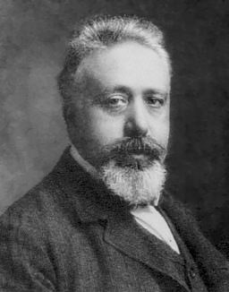

PhD encounters · interactive models
Predators and prey


During the First World War, fishing in the Adriatic almost stopped. When the marine biologist Umberto D'Ancona later studied the fish market records, he found something odd: in those years, sharks and rays made up a larger share of the catch than before or after. With fewer boats at sea, one would expect every species to recover alike. Why had the predators gained more than their prey? In 1925 he put the question to the mathematician Vito Volterra, his future father-in-law. Volterra answered with two equations, published in 1926:
dx/dt = α x − β x y
dy/dt = δ x y − γ yx is the prey, y is the predators
Alfred Lotka, working in the United States, had written down the same equations a year earlier, so the model carries both names. It says that predators and prey never settle. They chase each other in cycles, and fishing tips the balance towards the prey.
Top chart, populations against time. Vertical: population size. Horizontal: time.
Bottom chart, predators against prey. Horizontal: prey. Vertical: predators. Click or tap anywhere to start the populations from that point.
What the values mean
- x · prey
- The size of the prey population, in arbitrary units. In D'Ancona's data, the fish that are eaten.
- y · predators
- The size of the predator population. In D'Ancona's data, the sharks and rays.
- α · prey growth
- How fast the prey multiply when there are no predators.
- β · predation
- How often an encounter between a predator and a prey ends with the prey being eaten. The product x y counts the encounters.
- δ · predator growth
- How much each prey eaten adds to the predator population.
- γ · predator death
- How fast the predators die off when there is nothing to eat.
- Fishing effort
- Fishing removes both species at the same rate. In the model it lowers the prey growth to α minus the effort and raises the predator death to γ plus the effort.
- Balance point
- The one pair of populations that would stay constant: prey at γ/δ and predators at α/β, with fishing included. Every cycle turns around it.
- Average prey and predators
- The mean of each population over a full cycle. Volterra proved that it equals the balance point, whatever the starting populations.
- Length of one cycle
- The time between two peaks of the prey, measured on the simulated curve.
- Top chart
- Both populations over 60 units of time. The predators peak a little after the prey, every time.
- Bottom chart
- The same motion with no time axis. Each point is a pair of populations, and the cycle becomes a closed loop travelled anticlockwise. Starting further from the balance point gives a wider loop.
| Try this | What it shows |
|---|---|
| Raise the fishing effort | Average prey goes up and average predators go down. This is Volterra's answer to D'Ancona: when the war stopped the fishing, the predators gained. |
| Click near the balance point | The loop shrinks and the waves flatten. The cycle never dies out, it only gets smaller. |
| Click far from it | Long quiet stretches with almost no predators, then a sudden boom and crash. |
| Lower α below the fishing effort | The prey can no longer replace themselves and both populations collapse. |
Sources: V. Volterra, “Fluctuations in the abundance of a species considered mathematically”, Nature 118, 558–560 (1926). A. J. Lotka, Elements of Physical Biology (Williams and Wilkins, 1925). Integrated here with a fourth-order Runge–Kutta method and a time step of 0.01. The code in this repository was generated with Claude (Anthropic).